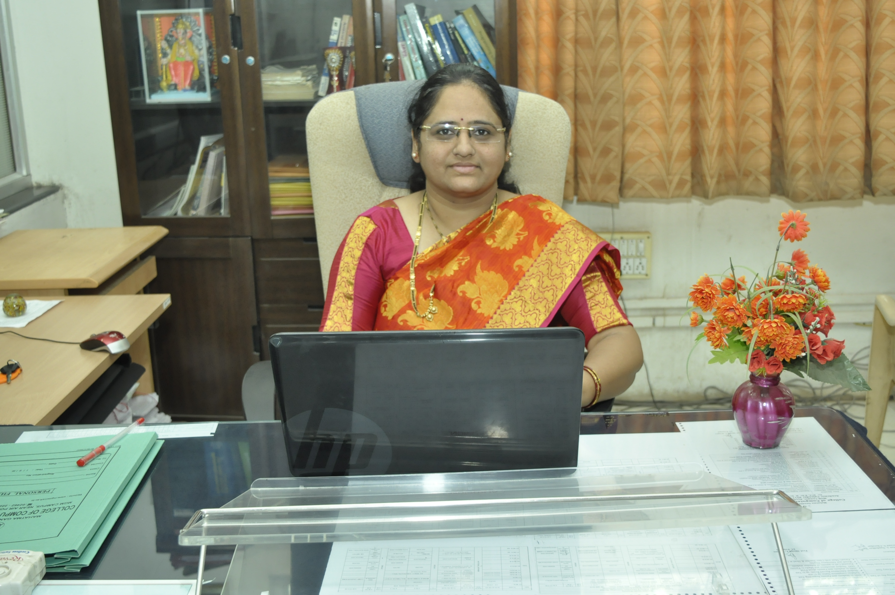

Vice Principal, Head of Department of Comp. Sci. & IT In every part of life, the use of computers has become essential. Right from railway reservation to sophisticated medical equipments, computers are inevitable. In every field, there is high demand of computer professionals. In current world of information technology to achieve top position one must have latest knowledge like VB.NET, Neural Network, VC++, JAVA etc. College provides the course M.Sc. Software Engineering that gives the deep and current knowledge to satisfy the need of industry.
Department of CS & IT striving hard to impart basic and advance knowledge required for present and future to ensure that these students will stand worthy for different kinds of job opportunities. Computer knowledge is not restricted to the science students; rather students of Arts, Commerce and MCVC are also having good opportunities to make their careers in computers. The BCA (Bachelor of Computer Application) course which is basically designed for them provides equal opportunities as like engineering and science students to get good jobs. Computer and IT is the leading industry that provides more jobs and opportunities with luxuries and high salaries in India as well as in abroad.
Dr. Cherekar Makarand C.
Head of Department (Biotechnolgy)
Biotechnology means the application of science and technology to living organisms as well as parts, products to alter living or nonliving materials for the production of knowledge, goods and services." Biotechnology, one of the leading technologies, has made significant advances in recent years and emerged as a frontline area of research and development with an overwhelming impact on society. The developments are very fast and new dimensions are being added every day. The Biotechnology can help students to find entry-level employment in biotech companies, healthcare, pharmaceuticals, and agriculture based industries, food, beverages industries, environment and energy sector.
Additional jobs are in research and development, production, quality control, management, marketing, contract research, academics and entrepreneurship. Biotechnology has become hottest global carrier opportunities today and attracting students all over the world. In India more than 1000 government and private research institutes and industries are seeking the trained professionals in the dynamic world of biotechnology. Bioinformatics is the science concerned with the development and application of computer hardware and software to the acquisition, storage, analysis, visualization and application of biological information. Bioinformatics is the future technology, it is the merger of Biotechnology and Information Technology the two leading technologies of the century. Genomics, Proteomics, Molecular Modeling, Structure Prediction, Structure Based Drug Designing; Data mining is some of the core areas of Bioinformatics.
Mr. Gaherwar Arjun singh
Head of
Department (Electronics)
With rapid developments in Telecommunications, VLSI and Embedded System Application, Medical Electronics, Consumer Electronics, Power Electronics, Instrumentation and Control, electronics field is offering challenging carrier opportunities to electronics professionals in all walks of human life. Thus, these rapid developments in electronics technology is providing, the electronics professionals high demand in the field of research, development and industries. Basic electronics, communication, microprocessor, digital laboratories are fully equipped with all basic infrastructure along with Instruments and facilities like ¨ Optoelectronics lab with He-Ne and semiconductor lasers ¨ Microprocessor and Micro controller based system development laboratory ¨ Power electronics laboratory ¨ Optical fiber communication laboratory ¨ Microwave communication laboratory ¨ Well equipped computer lab ¨ Highly demandable software like VHDL & ESDK